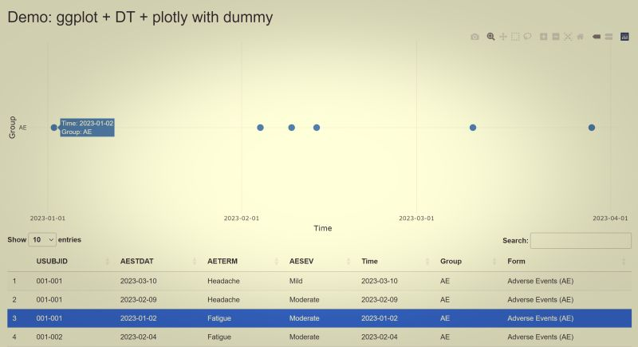

Plot-Table Highlighting in Shiny

When working with large volumes of clinical trial data, it’s easy to get lost in hundreds—or even thousands—of records. To support more intuitive data review, I’ve recently been exploring ways to combine visual plots with interactive data tables in Shiny. This approach can help reviewers quickly grasp key insights and trace them back to the raw data.
One idea I tested recently is a “highlight record” function, which links points on a plot to specific rows in a data listing. This functionality is built using three powerful R packages: {ggplot2}, {plotly}, and {DT}.
🔍 How It Works: Interactive Highlighting Step-by-Step Here’s a breakdown of the mechanism:
🕯️ Step 1: Create the Base Plot with ggplot2
The visualization starts with a standard ggplot chart—for example, plotting subject-level events by date and domain. This gives us full control over the aesthetics and data structure.
🕯️ Step 2: Make the Plot Interactive with plotly
Next, I use ggplotly() from the {plotly} package to convert the static ggplot into an interactive chart. With this transformation, the plot becomes clickable and dynamic, enabling deeper user interaction.
🕯️ Step 3: Capture User Clicks Using event_data(“plotly_click”)
Thanks to plotly_click event data, I can capture exactly which point a user clicks on—such as the domain, event date, or subject ID. This click event generates metadata we can use to match against the underlying dataset.
🕯️ Step 4: Highlight the Matched Record in DT::datatable()
The final step is to link the clicked point to a specific row in the data table rendered with the {DT} package. When a match is found (based on selected key values like date and domain), the corresponding row is automatically highlighted, drawing the reviewer’s attention to the source record.
🚀 Why This Matters
This interaction model significantly improves the reviewer experience:
Visual-first exploration: Users can spot patterns and anomalies visually.
Seamless data tracing: Clicking on a point takes you straight to the corresponding record—no need to scroll through the full table.
Faster reviews: Especially useful when reviewing patient timelines, safety events, or domain-specific findings.
⚠️ One Caveat: Handle Factor Conversion with Care
One challenge I encountered involves the matching logic. Since ggplot may internally convert character variables (like domain) into factors, you must be very cautious when comparing click event values to original data values.
A mismatch—say, due to different data types or formatting—can easily break the highlight feature. This is a common area for debugging, especially when your plot aesthetics depend on factor() transformations or custom labeling.
Final Thoughts
This approach is still evolving, but the integration of plot interactivity and table linking is already proving to be a valuable enhancement for Shiny apps, especially in clinical data review contexts. If you’re working with multi-domain datasets or timeline-based visualizations, this pattern might be worth exploring. If you have built something similar or have ideas to improve this logic, I would love to hear your thoughts! —